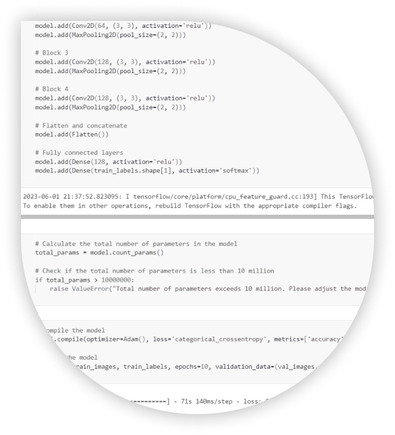
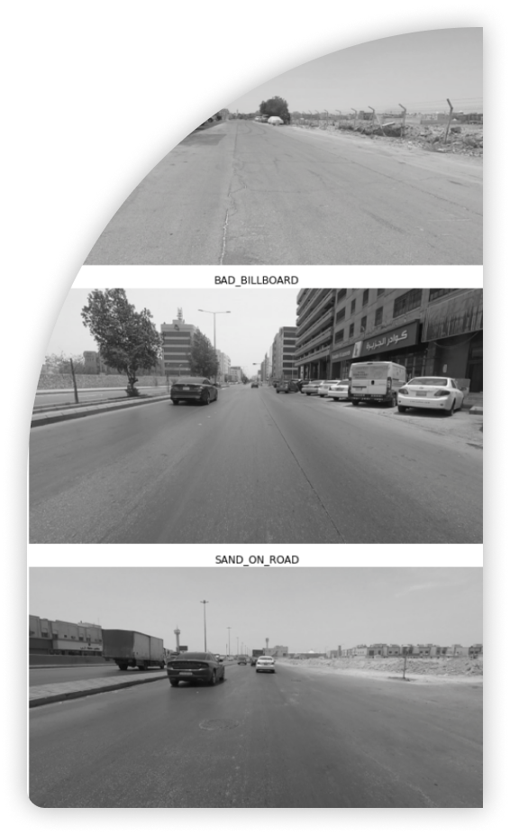

I undertook the task of classifying a vast dataset comprising thousands of urban visual pollution images. Leveraging Convolutional Neural Networks (CNN) and the ResNet architecture, I conducted rigorous experimentation to determine the most effective neural network design for this classification challenge.
Multi-class Image
Classification
Classification